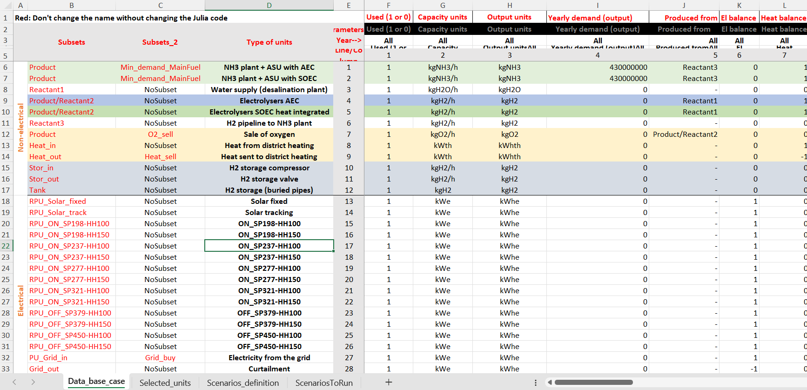
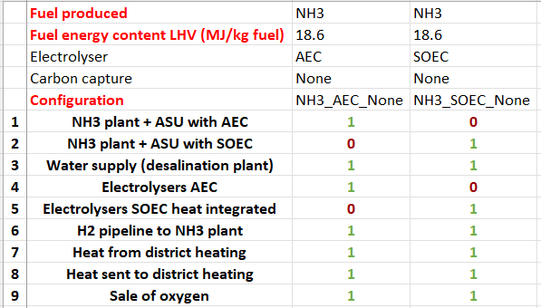
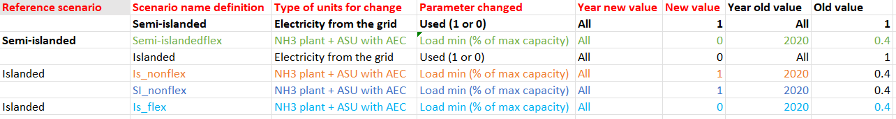
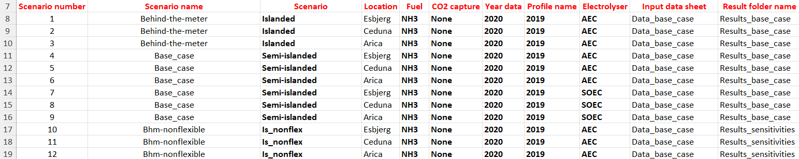
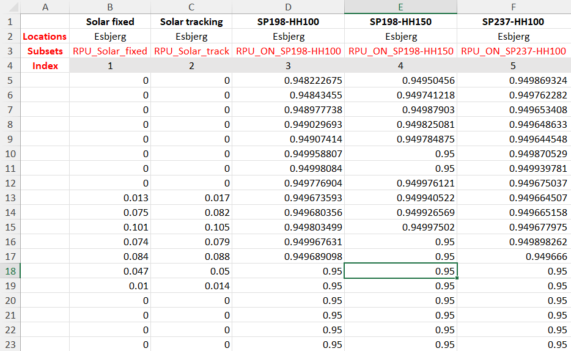
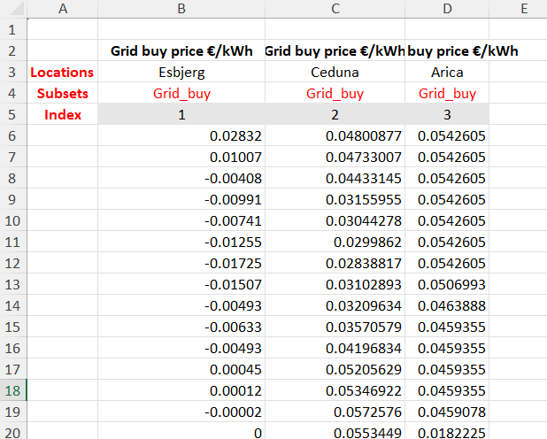
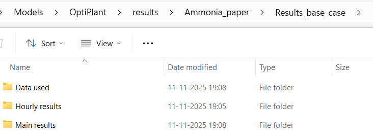

User guide
All of the important files to run the model are in the data folder.
To create your own analysis copy one of the existing folder and rename it to your convenience.
Let's use the data/Example folder as an example.
Data folder content
The data folder has two main folders:
- model_inputs: Contains one or more excel files with techno-economic data and study-case scenarios information
- profiles: Contains every time dynamic inputs (typically electricity prices, renewable power supply or grid CO2e emissions). Some subfolders can be used to organize the profiles folder and be called in the "model_inputs" excel file (see the
data/Full_modelfor example).
Model inputs
The excel file inside the model_inputs folder is the main "workplace" to run the tool.
In the Example folder, one file is called Data_ammonia_paper.xlsx and one is called Input_data_example.xlsx. Let's open the Input_data_example.xlsx file.
The excel document has the following sheets:
The purpose of each sheet is described below:
Data_base_case
This sheet includes a list of the different units that can constitute the PtX plant and their characteristics: production rates, heat and electrical flows, load ranges, ramp up/down times, CapEx and OpEx, etc… These are user defined and can be completely changed if needed (but everything works also without changing anything)

Adding a new technology can be done by inserting a line and fill up all the parameters. New technologies associated with a profile also requires to be added in the profile folder.
Avoid changing the cells in red. The julia code identifies the position of some column based on the names in red. These can be changed but the src/ReadData/user_defined files inside the OptiPlantPtX package folder should also be modified accordingly.
Selected units
This sheet contains a list of the different units and technologies that can constitute the PtX plant and the ones that are used for each fuel production process (i.e. NH3, H2, MeOH, etc.) For each case, a 1 implies that the unit is considered in the PtX plant and a 0 implies that it is not and will therefore be excluded of the optimization.

The number of lines and names should be exactly the same as in the Data_base_case sheet (so remember to also update this file when adding a new technology).
Make sure that the system is still physically/technically feasible before removing units. For example removing all power supply units or both curtailment and storage options will lead to infeasibilities.
It is also possible to use an automatic unit filter based on the unit names, and exclude some specific units manually if needed (see the file in Full_model for an example).
Scenario definition
This sheet is used to define different scenarios or sensitivities by modifying specific values in the Data_base_case sheet before running the optimization.
Each modification has to be associated with a name (Scenario name definition), that can be called when running a chain of scenarios.
The reference scenario can be used to include the changes from a previously defined scenario.

For example, in the image, Is_nonflex scenario uses the Islanded scenario as reference scenario, meaning that that the electricity from the grid - used (1 or 0) parameters will be set at 0 instead of 1 PLUS the NH3 plant - Load min will be set at 1 instead of 0.4 in the original Data_base_case sheet.
"Chains" of references do not work, meaning that Is_nonflex can not be used as a reference scenario (because it's already using a the Islanded reference scenario).
Scenarios to run
This sheet is used to list the different scenarios to be run through the optimization model. The conditions and characteristics of each of the listed scenarios make reference to the other sheets in the same excel document or to the profile folder. One can set the scenario parameters such as: operating strategy, location wind/solar data, year data, produced fuel, electrolyzer technology, etc. The output results of the model are going to be stored as CSV files in a results folder (the folder is automatically created).

The Scenario columns refers to the scenarios defined in the Scenarios_definition sheet. Scenario name, is the name of scenario that will appear in the result file after running OptiPlantPtX.
Profiles
In the Example folder, the current profile file is called 2019.xlsx. The excel document has the following sheets:
The purpose of each sheet is described below:
Flux
This sheet contains the normalized output power of solar and wind technologies for the year 2019 (which is an "average" year) in different locations.

In this example, the solar/wind power profiles included in the Flux excel sheet are extracted from the CorRES tool (for wind profiles), and from renewables.ninja website (for solar profiles).
It is important that the Subsets of the profile technologies matches with the ones from the Data_base_case data sheet. So each profile will be associated to the correct power generation technologies. Having technologies in the Data_base_case data sheet not associated to a specific profile will lead to an error.
Price
This sheet contains the hourly electricity spot price for the year 2019 at different locations. Similarly, the subset grid_buy should match with the one in the Data_base_case sheet (for the grid electricity).

It is also possible to add timeseries for electricity sale and/or hourly heat buying or selling.
Adding a selling option is possible only if the maximum amount of electricity that can be sold is fixed. It is recommended to avoid selling electricity in the model and include electricity sale of curtailed electricity in post-calculation.
It is recommended to remove negative electricity prices using the option "No negative prices" in the scenario sheet. Otherwise, the model will face some infeasibilities. The sale of electricity at a negative price can easily be done as a post-calculation (but will likely not change the results much).
Running the model
The model can be run by executing one of the scripts in the examples folder (for example Run example.jl) pressing the small arrow on the top right corner of the screen.
In general, using the function run_optimization_scenarios with the following arguments is sufficient to conduct basic analyses:
using OptiPlanPtX
run_optimization_scenarios(
datafoldername = "Example", #Name of the folder with all the data
techno_eco_filename = "Input_data_example", #Techno-economic and scenario file name
scenario_set = "ScenariosToRun", #Sheet name with the scenarios list
solver = "HiGHS", # Solver name (HiGHS or Gurobi)
scenarios_to_run = 1:18; #Specific numbers of scenarios to run one after the other
save_input_profiles = true, #Save the profile input files in the results folder
save_input_technoeco = true) #Save the techno-economic data files used in the results folder
Checking the results
All results are saved in a folder that has the same name as the data folder (i.e. Example or Ammonia_paper). Results subfolders are user-defined in the Techno-economic and scenarios excel file (i.e. Input_data_example.xlsx) in the ScenariosToRun sheet.
These folders always contains subfolders named ’Data used’, ’Hourly results’, and ’Main results’, that include the inputs and results of the simulation in CSV files.

The method to process the results is quite free.
For example, this can be done with the excel file and pivot charts provided on the GitHub or using streamlit
Trouble shooting for common errors
If you are a new user and are facing one of the errors not mentioned here, feel free to contact one of the authors of the package.
Format error when displaying simulation results in excel
If the opened csv results file looks like this, then you probably have a problem with the excel separators.

To solve this, it possible to change the separators for your Windows system (explanations on this website)[https://www.supportyourtech.com/tech/how-to-change-the-windows-11-list-separator-a-step-by-step-guide/]
In excel, it is also possible to you can separators settings in File > Options > Advanced and make some changes in some of the excel tabs: Home , Number and 1000 sperator box.